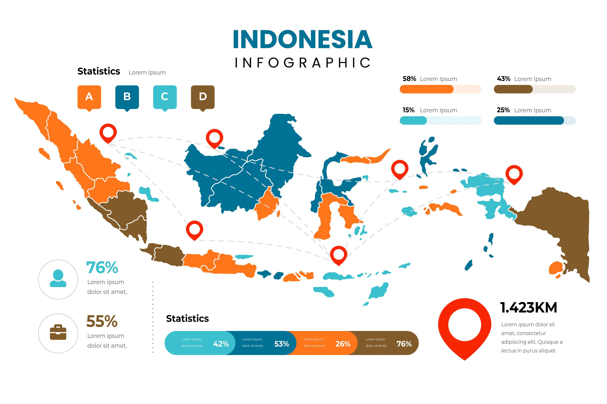
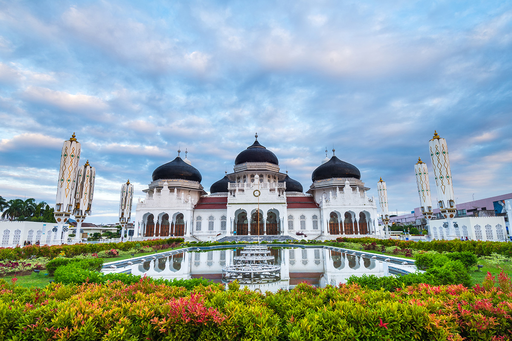
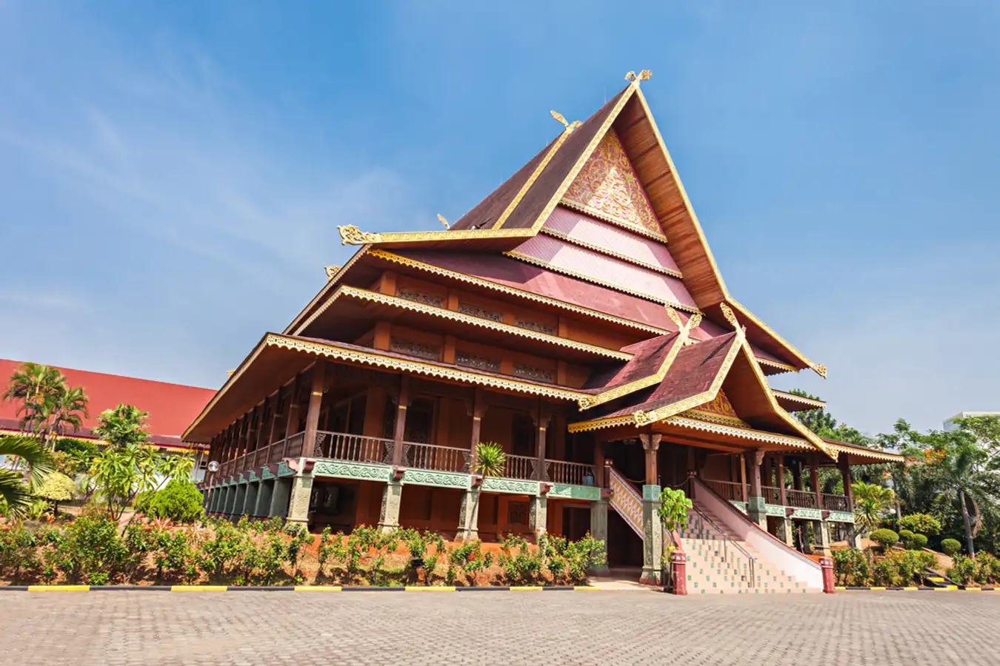
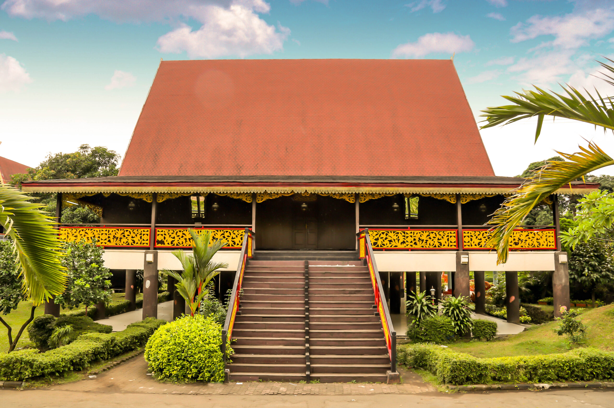
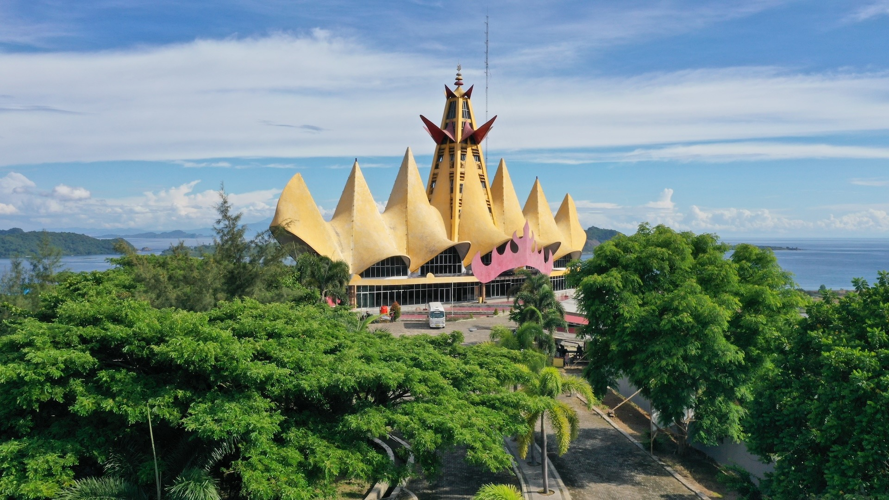
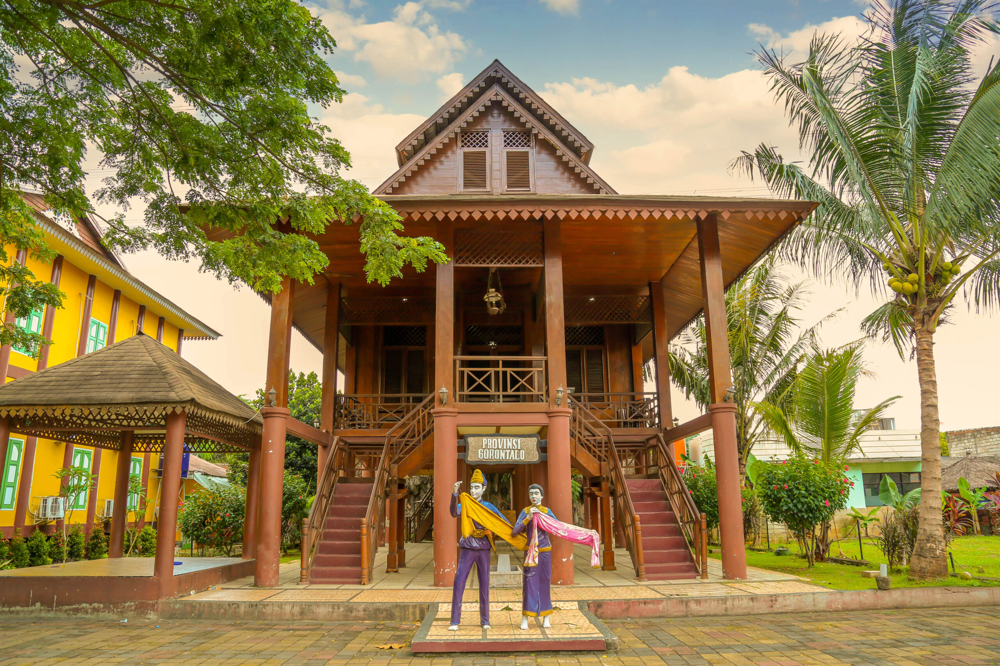
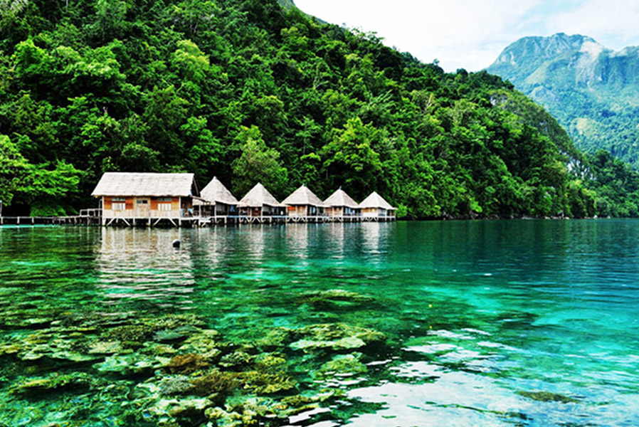
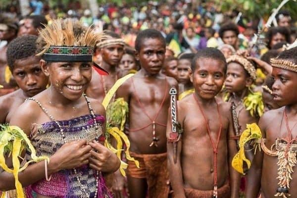

Beranda
Sejarah
Budaya & Tradisi
Galeri
Kegiatan Nusantara
Wisnu Mu'amar
Your browser does not support the video tag.
Play Video
Nusantara is Wonderful
keanekaragaman budaya dari Sabang sampai Merauke
1345
Total Budaya

38
Total Provinsi

Aceh
Sumatera Utara
Sumatera Barat

Riau

Jambi
Sumatera Selatan
Bengkulu

Lampung
Kalimantan Barat
Kalimantan Tengah
Kalimantan Timur
Kalimantan Selatan
Kalimantan Utara
Sulawesi Utara
Sulawesi Tengah
Sulawesi Selatan
Sulawesi Tenggara

Gorontalo
Sulawesi Barat

Maluku
Maluku Utara

Papua
Papua Barat
Jawa Tengah
DI Yogyakarta
Jawa Timur
Bali
Nusa Tenggara Barat
Nusa Tenggara Timur
Jawa Barat
Bangka Belitung
DKI Jakarta
Banten
Papua Barat Daya
Papua Pegunungan
Papua Tengah
×
×